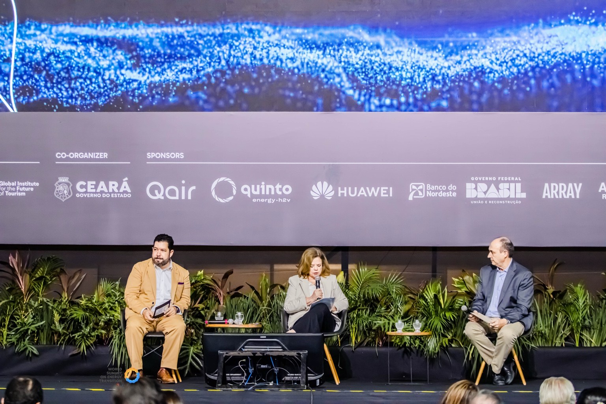
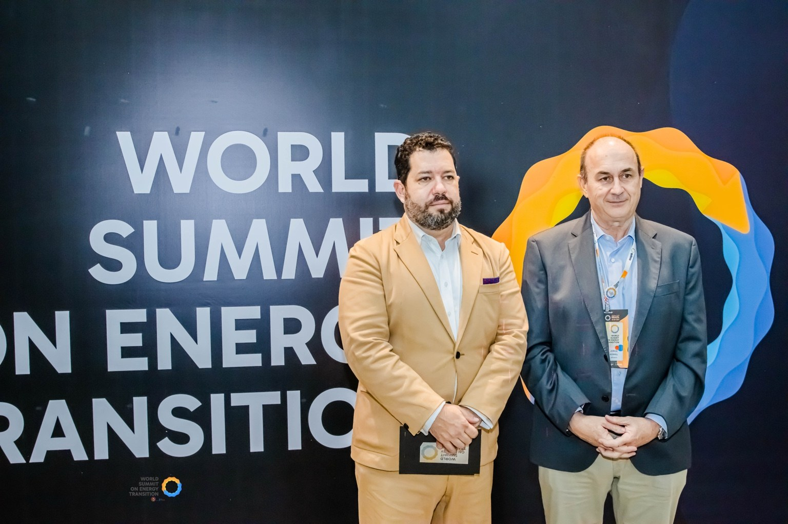
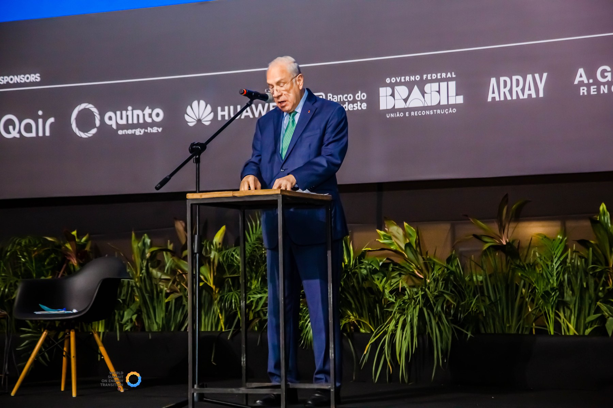
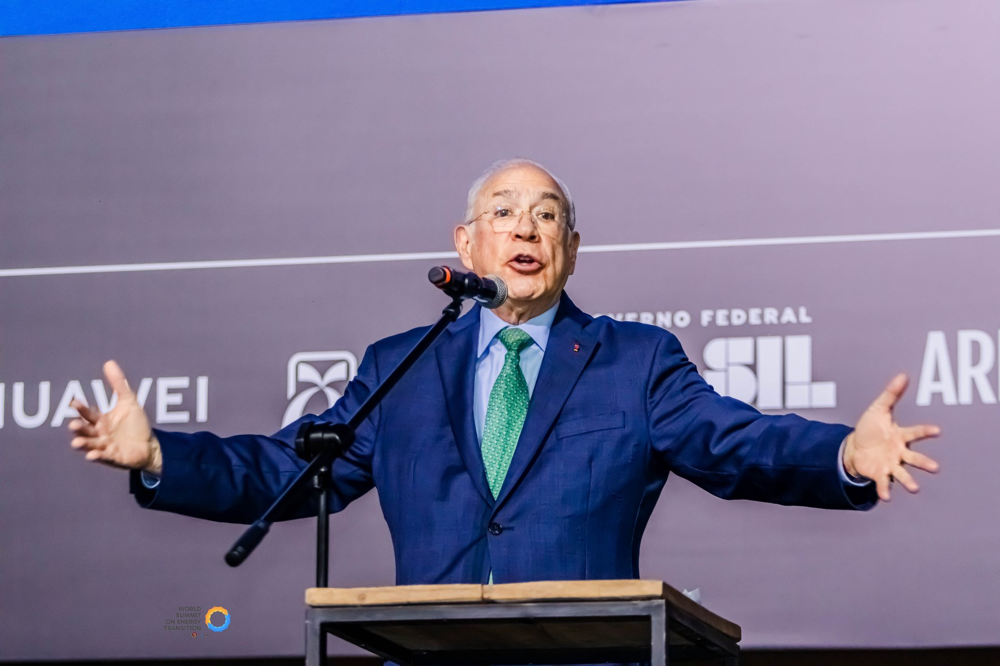

What the Summit Was
The World Summit on Energy Transition was convened in Fortaleza at the height of global debates on decarbonization, renewable energy and COP30 preparation, positioning Ceará as a global hub for energy transition and green hydrogen.
Purpose & Positioning
The summit connected global climate ambition with Ceará’s energy potential, bringing together former heads of state, international organizations, companies, public officials and experts to discuss the future of renewable energy and sustainable growth.
Program Architecture
The program unfolded across thematic stages and institutional conversations, combining keynote remarks, ministerial discussions, private-sector commitments, green finance debates and the presentation of a shared roadmap for action.
Outcomes & Legacy
The event gave Fortaleza and Ceará unprecedented international visibility and reinforced the role of regions as practical laboratories for the global energy transition.
Gallery
A curated selection of images from World Summit on Energy Transition.



